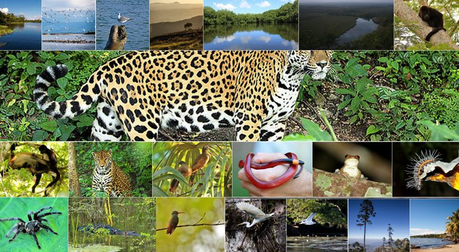

En departamento de Escuintla, es importante dar a conocer que en el período de 1998 al 2009, en el municipio se han realizado 41 proyectos de reforestación, cubriendo un área total de 1,538 hectáreas, bajo el modelo de PINFOR, con especies de palo blanco, teca, melina, matilisguate y eucalipto. Con el objetivo principal de contar con área maderable para aserrío y energéticos. La flora que adorna el paisaje está constituida por árboles de conacaste, cedro, caoba, ceiba y palo blanco. Los valles están cubiertos por cultivos de caña de azúcar, café y cardamomo. La fauna en la costa grande es diversa, incluye desde varios tipos de cangrejos, jaibas hasta peces como bagre, robalete, róbalo y aleta. En el caso de las aves, abundan distintos tipos de garzas, pelícanos, chorlos y gaviotas. También habitan iguanas y tortugas de agua dulce.
